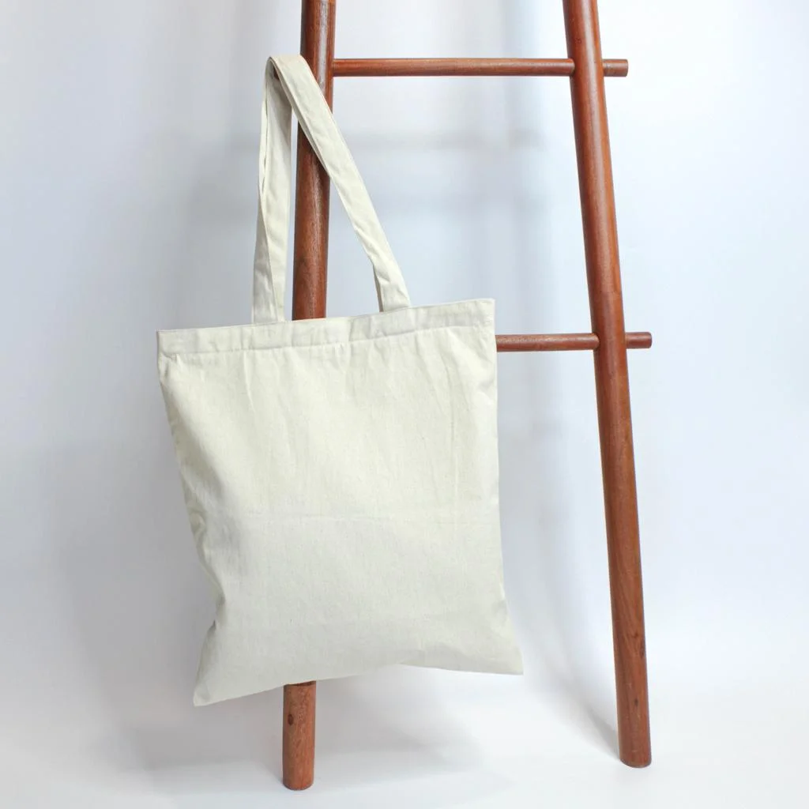

Jawaban singkat: Ukuran totebag untuk kuliah sebaiknya disesuaikan dengan dimensi laptop, jumlah buku, tempat minum, dan perlengkapan pribadi. Periksa panjang, lebar, dan kedalaman ruang dalam tas — bukan hanya ukuran luar — agar kapasitas mencukupi tanpa mengurangi kenyamanan.
Ringkasan Inti Panduan
- Ukuran totebag harus mengikuti barang yang paling besar — biasanya laptop atau binder.
- Totebag sedang cocok untuk perlengkapan kuliah sederhana tanpa laptop besar.
- Totebag besar dapat dipertimbangkan untuk buku, laptop, dan perlengkapan ekstra.
- Kedalaman dan lebar dalam menentukan kapasitas efektif, bukan hanya dimensi luar.
- Beban tas harus tetap sesuai kemampuan konstruksi jahitan dan kenyamanan pengguna.
- Pilih tali bahu lebar dan jahitan penguat untuk tas yang berat.

Mengapa Ukuran Totebag Penting untuk Mahasiswa?
Ukuran totebag menentukan jumlah dan jenis perlengkapan yang dapat dibawa selama aktivitas perkuliahan. Tas yang terlalu kecil membuat barang sulit dimasukkan, sedangkan tas yang terlalu besar dapat terasa kurang praktis untuk kebutuhan sederhana.
Mahasiswa memiliki kebutuhan berbeda berdasarkan program studi dan aktivitas kampus. Mahasiswa yang banyak menggunakan buku cetak membutuhkan kapasitas berbeda dari mahasiswa yang lebih sering menggunakan laptop dan dokumen digital.
Karena itu, memilih totebag tidak cukup hanya berdasarkan tampilan luar. Dimensi bagian dalam, kedalaman, bukaan, dan bentuk dasar tas juga perlu diperhatikan. Jika kamu juga ingin tahu material terbaik untuk tas kuliah, baca panduan bahan totebag untuk kuliah yang sudah kami susun secara lengkap.
Cara Menentukan Ukuran Totebag untuk Kuliah
Cara menentukan ukuran totebag adalah dengan mengukur barang terbesar yang akan dibawa, menghitung kebutuhan perlengkapan tambahan, lalu membandingkannya dengan dimensi ruang utama tas.
1. Ukur Barang Terbesar Terlebih Dahulu
Laptop, binder, atau buku berukuran besar biasanya menjadi barang utama yang menentukan kebutuhan dimensi totebag. Ukur panjang, lebar, dan ketebalan barang tersebut. Pastikan ruang bagian dalam tas memiliki toleransi yang cukup agar barang dapat dimasukkan dan dikeluarkan dengan mudah.
2. Hitung Jumlah Barang Bawaan Harian
Buat daftar barang yang biasanya dibawa ketika kuliah, misalnya:
- Laptop atau tablet.
- Buku catatan dan binder.
- Tempat pensil dan alat tulis.
- Dompet dan kartu mahasiswa.
- Tempat minum (tumbler).
- Charger dan kabel data.
- Perlengkapan pribadi seperti masker atau obat.
Daftar tersebut membantu memperkirakan kapasitas yang diperlukan secara lebih akurat.
3. Perhatikan Kedalaman Tas
Kedalaman tas memengaruhi kemampuan totebag menampung barang yang lebih tebal. Totebag dengan lebar cukup besar belum tentu mampu menampung banyak barang apabila bagian bawahnya terlalu sempit. Tas dengan gusset (panel samping dan bawah) memberikan kapasitas jauh lebih besar dari totebag berdasar datar.
4. Periksa Lebar Bukaan
Bukaan totebag harus cukup luas untuk memasukkan barang tanpa kesulitan. Hal ini penting terutama bagi mahasiswa yang membawa laptop atau binder dengan ukuran besar. Bukaan yang sempit menyulitkan akses saat berpindah kelas.
5. Pertimbangkan Bentuk Dasar Tas
Totebag dengan bentuk dasar datar memberikan ruang penyimpanan berbeda dari model yang memiliki gusset atau bagian samping dan bawah yang lebih lebar. Pilih sesuai kebutuhan kapasitas dan gaya yang diinginkan.
Perbedaan Totebag Kecil, Sedang, dan Besar
Ukuran totebag dapat dikelompokkan berdasarkan kapasitas penggunaan, namun setiap produsen dapat menggunakan standar dimensi yang berbeda. Berikut panduan umum berdasarkan kebutuhan mahasiswa.
Totebag Ukuran Kecil
Totebag kecil cocok untuk membawa perlengkapan sederhana seperti dompet, ponsel, buku catatan kecil, dan alat tulis. Ideal untuk kuliah singkat atau ketika hanya perlu membawa beberapa item.
✓ Kelebihan
- Mudah dibawa ke mana saja
- Tidak memakan banyak ruang
- Cocok untuk aktivitas singkat
- Tampilan lebih ringkas dan stylish
✗ Keterbatasan
- Kapasitas terbatas
- Tidak selalu sesuai untuk binder atau laptop
- Kurang ideal untuk banyak perlengkapan
Totebag Ukuran Sedang
Totebag ukuran sedang dapat digunakan untuk membawa buku catatan, tempat pensil, dompet, dan barang pribadi lainnya. Ini merupakan pilihan paling fleksibel bagi sebagian besar mahasiswa.
✓ Kelebihan
- Relatif fleksibel untuk berbagai kebutuhan
- Cocok untuk aktivitas harian kampus
- Tidak terlalu besar dan memberatkan
- Mudah dipadukan dengan pakaian kasual
✗ Keterbatasan
- Kapasitas terbatas untuk banyak buku
- Kesesuaian dengan laptop harus dicek dimensi aktual
Totebag Ukuran Besar
Totebag besar dapat dipertimbangkan untuk mahasiswa yang membawa banyak perlengkapan sekaligus — laptop, beberapa buku, tumbler, dan perlengkapan ekstra.
✓ Kelebihan
- Ruang utama lebih luas
- Dapat menampung lebih banyak barang
- Cocok untuk hari kuliah penuh dengan banyak sesi
- Dapat digunakan untuk kegiatan di luar kampus
✗ Keterbatasan
- Berpotensi terasa berat saat diisi penuh
- Membutuhkan konstruksi dan tali yang lebih kuat
- Dapat terasa kurang praktis untuk penggunaan ringan
Tabel Perbandingan Ukuran Totebag Kuliah
Tabel berikut merangkum perbedaan tiga kategori ukuran totebag berdasarkan kebutuhan mahasiswa. Dimensi bersifat ilustratif — selalu ukur langsung produk yang ingin dibeli.
| Aspek | Kecil | Sedang | Besar |
|---|---|---|---|
| Estimasi Tinggi | 30–35 cm | 36–42 cm | 43–50 cm |
| Estimasi Lebar | 25–30 cm | 31–38 cm | 39–46 cm |
| Kedalaman Gusset | Tanpa / tipis | 5–8 cm | 8–15 cm |
| Kapasitas Laptop | Tidak disarankan | Hingga 13–14 inci (cek dimensi) | Hingga 15–16 inci |
| Jumlah Buku | 1–2 buku tipis | 2–3 buku A4 | 4+ buku tebal |
| Cocok Untuk | Kuliah singkat, belanja, hangout | Kuliah harian, seminar | Kuliah seharian, perjalanan luar kota |
| Rekomendasi Bahan | Blacu, kanvas tipis | Kanvas marsoto, kanvas twill | Kanvas premium, drill, poly-canvas |
| Tingkat Kemudahan | Sangat mudah dibawa | Fleksibel, nyaman harian | Butuh konstruksi kuat |
* Dimensi bersifat estimasi umum. Setiap produk memiliki spesifikasi berbeda — selalu minta ukuran aktual kepada vendor sebelum memesan.
Apakah Totebag Ukuran Besar Selalu Lebih Baik?

Totebag besar tidak selalu menjadi pilihan terbaik karena kapasitas tambahan dapat mendorong pengguna membawa barang yang sebenarnya tidak diperlukan — sehingga tas justru lebih berat dari yang seharusnya.
Ukuran tas sebaiknya mengikuti kebutuhan aktual, bukan sekadar memilih kapasitas terbesar. Mahasiswa yang membawa laptop dan satu atau dua buku mungkin cukup menggunakan totebag berukuran sedang sesuai dimensi perangkat. Sementara itu, mahasiswa yang hanya membawa buku catatan dan perlengkapan kecil dapat menggunakan tas lebih ringkas.
Pertimbangkan juga berat tas ketika kosong, jenis tali, dan distribusi beban. Tas dengan bahan kanvas yang tebal namun besar bisa jadi lebih berat saat kosong dibanding tas berbahan drill yang lebih ringan.
Cara Memilih Totebag yang Muat Laptop
Totebag untuk laptop harus memiliki ruang utama yang sesuai dengan dimensi perangkat dan perlindungan tambahan untuk mengurangi risiko goresan serta benturan ringan.
Periksa Dimensi Fisik Laptop
Ukuran laptop biasanya disebut berdasarkan diagonal layar (misalnya 13 inci, 15,6 inci). Namun, ukuran layar tidak sama dengan panjang dan lebar fisik perangkat. Karena itu, ukur dimensi laptop secara langsung sebelum memilih totebag. Tambahkan toleransi 2–3 cm agar laptop mudah dimasukkan dan dikeluarkan.
Pilih Kompartemen Khusus Laptop
Kompartemen laptop membantu memisahkan perangkat dari barang lainnya. Fitur ini dapat mengurangi risiko gesekan dengan buku, botol minum, atau benda keras di dalam tas.
Gunakan Laptop Sleeve Tambahan
Laptop sleeve menjadi perlindungan tambahan ketika totebag tidak memiliki bantalan khusus. Pilih sleeve yang ukurannya sesuai dengan perangkat dan pastikan tebal padding-nya memadai.
Perhatikan Kekuatan Bagian Bawah Tas
Bagian bawah tas harus mampu menopang berat laptop dan barang bawaan lainnya. Jahitan penguat dan konstruksi dasar menjadi bagian yang perlu diperiksa sebelum membeli. Untuk referensi pilihan produk dengan konstruksi kuat, kunjungi halaman portofolio produk kami.
Fitur Tambahan yang Perlu Dipertimbangkan
Selain ukuran, fitur tambahan dapat membuat totebag jauh lebih fungsional untuk aktivitas perkuliahan. Berikut fitur yang paling umum dan kegunaannya:
🗂️ Saku Internal
Digunakan untuk menyimpan dompet, kartu mahasiswa, kunci, dan benda kecil agar mudah diakses tanpa perlu mengaduk isi tas.
🔒 Zipper Penutup
Membantu menutup ruang utama agar barang tidak mudah terjatuh, terutama saat tas dalam posisi miring atau berpindah transportasi.
💻 Kompartemen Laptop
Memudahkan pengguna memisahkan perangkat elektronik dari perlengkapan lainnya. Versi berpadding memberikan perlindungan ekstra dari benturan.
🥤 Saku Botol Samping
Menjaga tempat minum tetap berada pada posisi stabil dan mudah diambil tanpa harus membuka ruang utama tas.
👜 Tali Bahu Lebar
Tali yang lebih lebar membantu menyebarkan tekanan pada area bahu dibandingkan tali sempit, mengurangi kelelahan bahu saat membawa beban berat.
🔗 Jahitan Penguat (Bar-Tack)
Jahitan bar-tack pada sambungan tali dan badan tas menentukan daya tahan keseluruhan. Penting untuk tas yang membawa beban berat setiap hari.
Cara Mengatur Barang di Dalam Totebag
Pengaturan barang yang tepat membantu menjaga totebag tetap rapi dan mengurangi risiko kerusakan barang bawaan. Berikut urutan yang direkomendasikan:

- Letakkan buku dan barang datar pada bagian utama sebagai fondasi.
- Masukkan laptop ke dalam sleeve atau kompartemen khusus yang berpadding.
- Simpan dompet dan kartu di saku internal agar mudah dijangkau.
- Letakkan charger dan kabel pada pouch kecil agar tidak kusut.
- Pastikan tempat minum tertutup rapat sebelum dimasukkan ke saku botol.
- Hindari menumpuk barang berat pada satu sisi agar distribusi beban merata.
Pengaturan ini memudahkan akses barang saat berpindah kelas atau mengikuti kegiatan kampus, sekaligus mengurangi tekanan berlebihan pada jahitan dan tali tas.
Kesalahan Umum Saat Memilih Ukuran Totebag
Beberapa kesalahan berikut kerap membuat totebag yang dibeli kurang sesuai untuk aktivitas perkuliahan. Hindari kesalahan ini sebelum memutuskan membeli:
| Kesalahan Umum | Dampak | Solusi |
|---|---|---|
| Hanya memperhatikan ukuran luar | Dimensi dalam bisa jauh lebih kecil | Tanyakan ukuran ruang dalam kepada penjual |
| Tidak mengukur laptop sebelum membeli | Laptop tidak muat walau tas "terlihat cukup" | Ukur dimensi fisik laptop, tambahkan toleransi 2–3 cm |
| Mengabaikan kedalaman tas | Tas tidak bisa menampung barang tebal | Pilih tas dengan gusset untuk kapasitas lebih besar |
| Memilih tas terlalu kecil untuk kebutuhan harian | Barang tidak muat, tas tampak penuh sesak | Buat daftar barang bawaan sebelum memilih ukuran |
| Memilih tas terlalu besar tanpa pertimbangan | Tas berat meski tidak penuh | Pilih ukuran sesuai kebutuhan aktual, bukan terbesar |
| Tidak memeriksa lebar bukaan | Sulit memasukkan barang besar | Pastikan bukaan cukup lebar untuk laptop atau binder |
| Mengabaikan kekuatan jahitan | Tali atau sambungan cepat rusak | Periksa jahitan penguat pada sambungan tali dan dasar |
FAQ Ukuran Totebag untuk Kuliah
Kesimpulan Praktis
Ukuran totebag untuk kuliah harus dipilih berdasarkan kebutuhan barang bawaan, bukan hanya tampilan luar. Periksa dimensi laptop, jumlah buku, kedalaman tas, dan lebar bukaan sebelum membeli.
- Totebag kecil cocok untuk kebutuhan sederhana dan aktivitas singkat.
- Ukuran sedang memberikan fleksibilitas untuk kuliah harian.
- Ukuran besar dapat dipertimbangkan untuk mahasiswa dengan banyak perlengkapan.
- Selain ukuran, perhatikan konstruksi jahitan, kekuatan tali, dan fitur penyimpanan.
Untuk memahami pilihan material dan karakteristik kain sebelum memesan, baca juga panduan bahan totebag untuk kuliah dan panduan memilih totebag kuliah yang stylish dan fungsional. Jika ingin langsung konsultasi ukuran dan custom totebag, hubungi tim kami melalui WhatsApp.